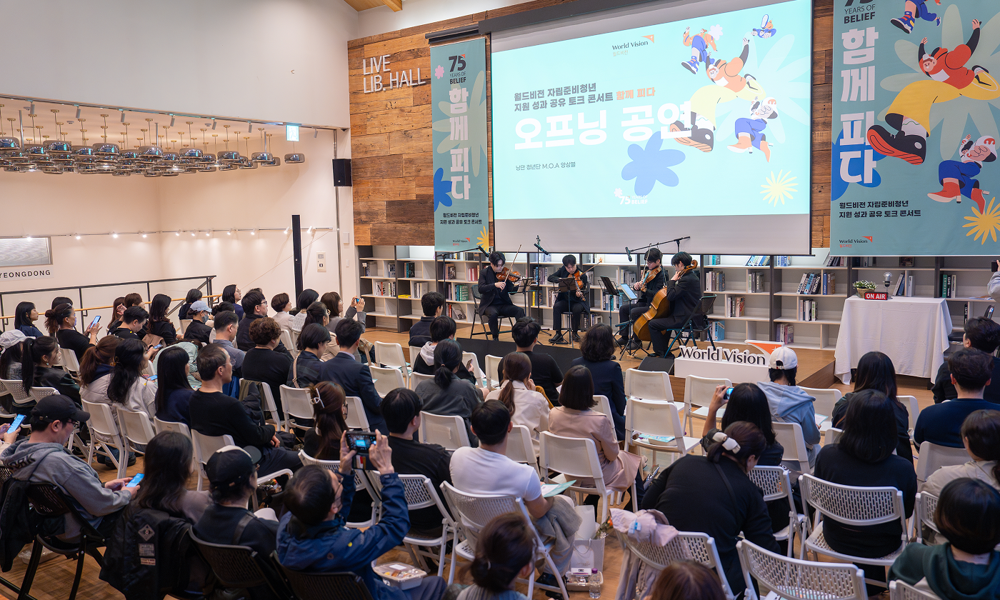
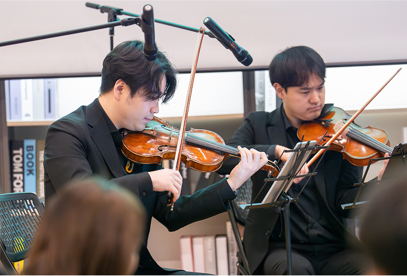
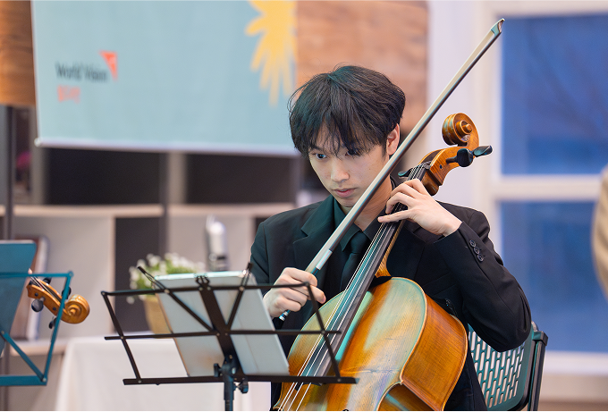
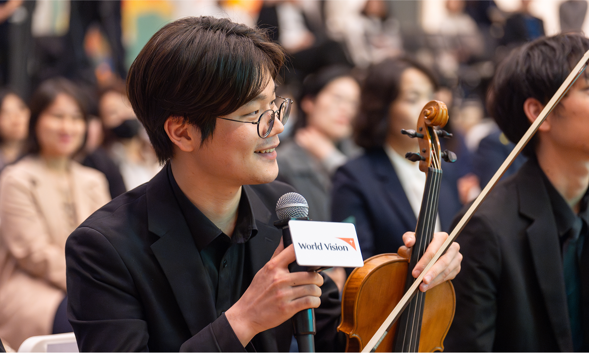
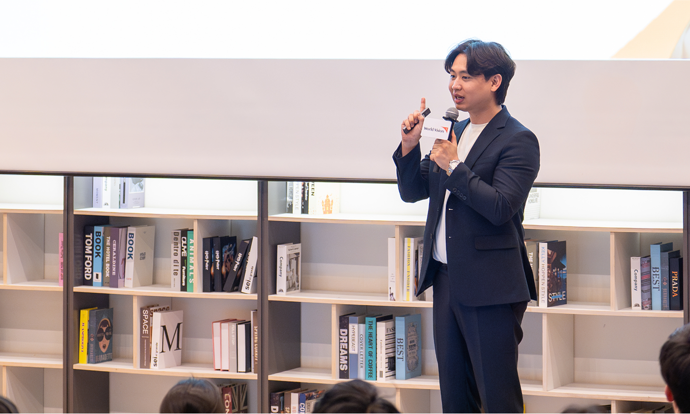
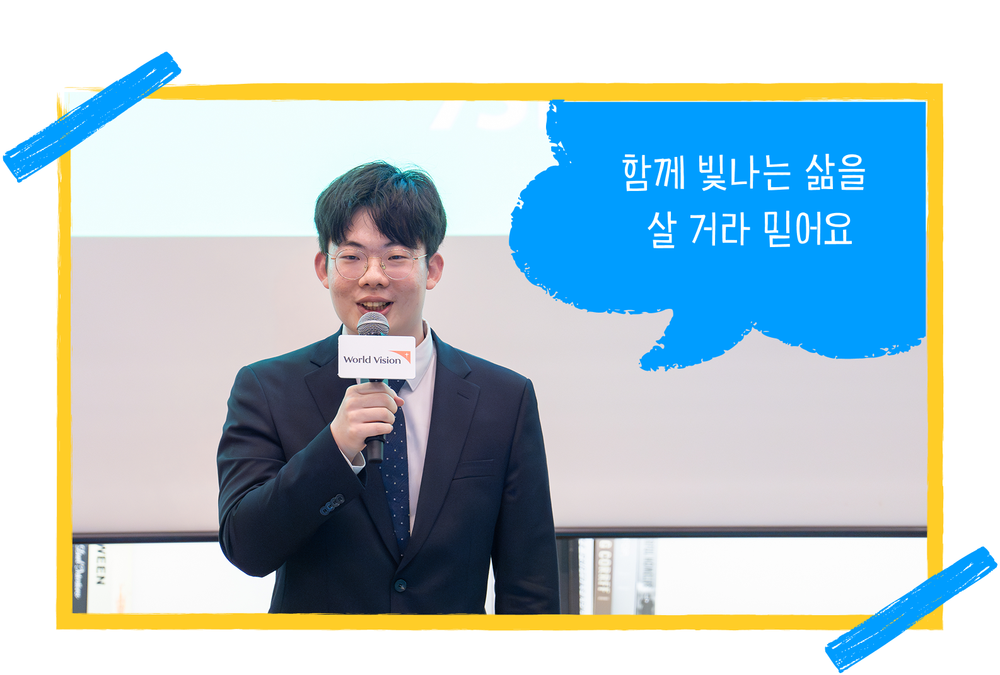
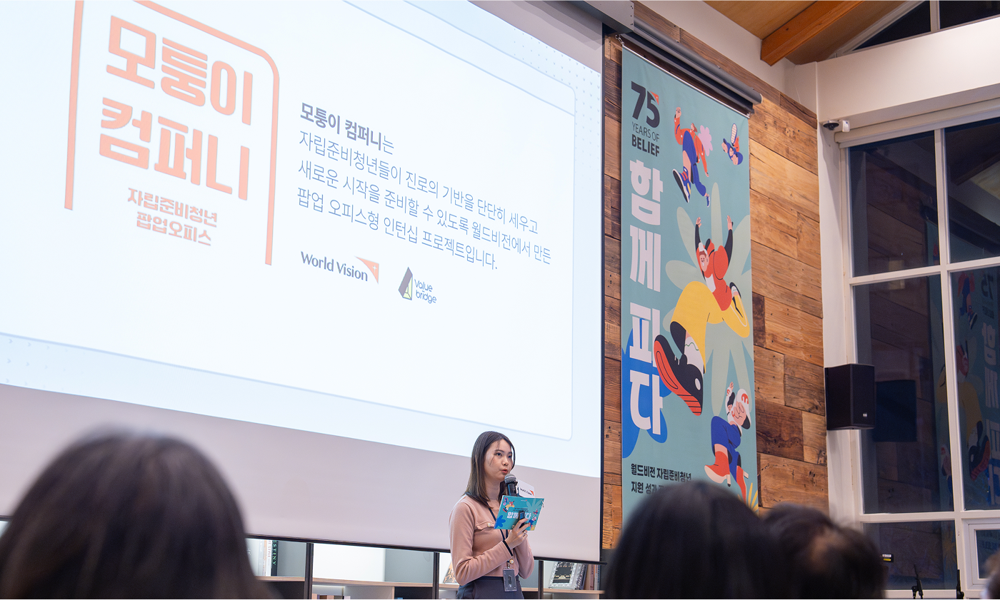
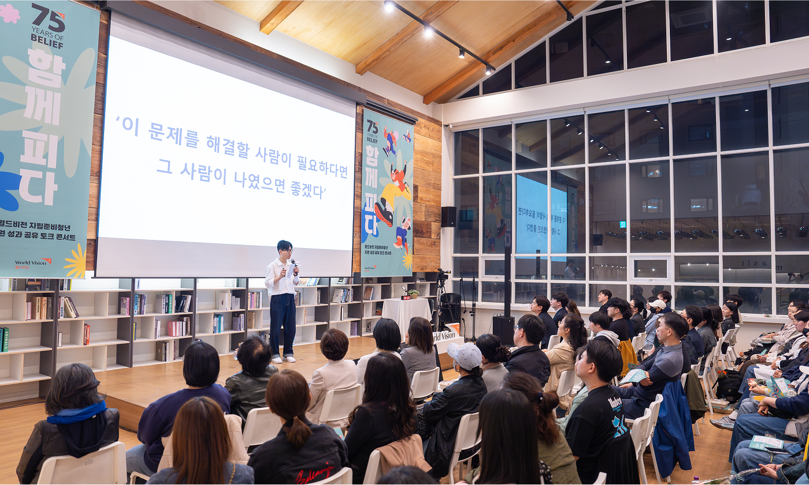
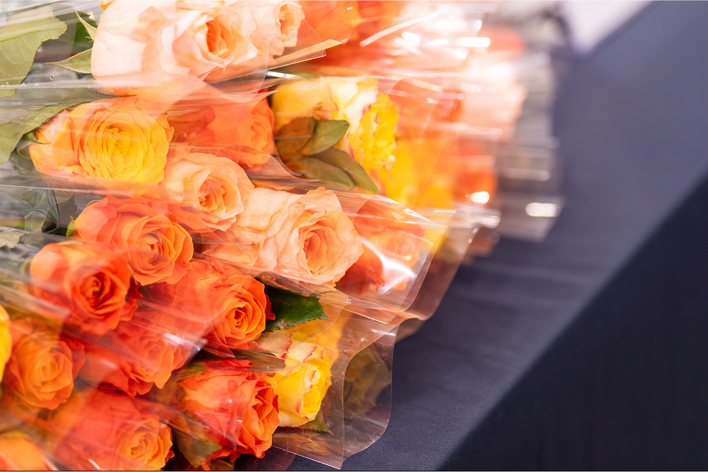

지난 봄, 서울 명동의 커뮤니티 하우스 ‘마실’에는 따듯한 봄바람으로 온기가 퍼졌습니다. 월드비전 창립 75주년을 맞아 열린 <자립준비청년 지원 성과 공유 토크 콘서트 ‘함께 피다’>는 지난 4년간 진행한 자립지원사업을 100여 명의 후원자와 자립준비청년들이 함께 나누는 자리였습니다.
단지 ‘성과’만 나누는 자리가 아닌, 함께 ‘마음’을 나누고 ‘길’을 걸어갔던 시간. 이날 행사는 자립을 향한 자립준비청년들의 여정을 음악과 이야기로 오롯이 담아냈습니다.
단지 ‘성과’만 나누는 자리가 아닌, 함께 ‘마음’을 나누고 ‘길’을 걸어갔던 시간. 이날 행사는 자립을 향한 자립준비청년들의 여정을 음악과 이야기로 오롯이 담아냈습니다.
혼자가 아니었기에 가능한 시작
행사의 첫 문은 자립준비청년 앙상블 M.O.A의 공연이었습니다. 영화 <라라랜드>의 OST가 울려 퍼지며 자립을 향한 따뜻한 여정의 서막을 열었습니다.

사회자로 나선 배우 김기리는 드라마 <폭싹 속았수다>의 명대사 “유채꽃은 혼자 피면 꺾이지만 떼로 피면 살아남는다”를 인용하며 이렇게 말했습니다.

혼자가 아니었기에 가능한 변화,
‘함께 피다’ 지금 시작합니다.
‘함께 피다’ 지금 시작합니다.

진심, 자립의 길을 비추다
1부 ‘자립라디오’는 후원자들이 보내온 사연으로 꾸며졌습니다.
청중석에 있던 서호걸 후원자의 어린 시절 사연이 소개되었습니다. 후원자는 어린 시절 부모님을 잃고 사촌 집에 머물던 시절, 사촌 형이 건넨 “온실 속보다 비바람 속 들에서 핀 국화가 더 향기롭다. 환경을 탓하지 말고 어디서든 최선을 다해라. 그렇게 하면 너는 잘될 거야”라는 말이 평생의 버팀목이 되었다는 후원자의 고백은 많은 이들의 마음을 적셨습니다.
그는 현장에서 직접 자립준비청년들에게 “자립준비청년 선배로 먼저 살아보니, 열심히 살다 보면 꼭 도움이 오는 순간이 있습니다. 그러니 절대 포기하지 마세요. 힘든 시간이 지나면 어느새 길이 열릴 거예요”라고 따뜻한 격려의 말을 전했습니다.
후원자들의 진심은 자립준비청년들의 어깨를 토닥여주었습니다.



자립, 그 길에 선 사람들
2부 ‘자립토크 – 함께 피다’는 자립준비청년들과 이들 곁에서 함께하는 사람들의 진솔한 이야기로 이어졌습니다.

청년 당사자 주도 프로젝트 ‘낭만청년단’과 역량 중심 ‘모퉁이컴퍼니’를 소개하면서, 월드비전은 청년에게 단순한 도움을 제공하는 것이 아니라 스스로 자립할 수 있는 힘을 키울 수 있도록 지원하는 것을 사업의 목표로 삼고 있다고 설명했습니다.
‘낭만청년단’에 참여한 정재국 청년은, 자신과 비슷한 환경에 있는 청년들에게 실질적인 도움이 될 정보를 담은 애플리케이션을 널리 알리는 활동에 참여한 경험을 나누었습니다. 그리고 영상을 통해 행사를 보고 있던 후원자였던 분께서 정재국 청년에게 메시지를 보내 “멋진 어른으로 자라줘서 고맙고, 지금과 같이 앞으로도 다른 이들을 도와주며 함께 빛나는 삶을 살 거라 믿는다”는 진심 가득한 응원은 객석을 뭉클하게 했습니다.  ‘모퉁이컴퍼니’에 참여한 마린 청년은 “이 프로젝트를 통해 돈이 기준이 아닌, 내가 진짜 원하는 일이 무엇인지, 잘할 수 있는 일이 무엇인지를 처음으로 진지하게 생각해볼 수 있었다”라며 “이 기회를 통해 다시 꿈꾸게 되었다”고 말했습니다.

어려운 순간을 어떻게 견뎠느냐는 질문에 두 청년은 한목소리로 “곁에 있어 준 친구와 동료, 선후배의 위로와 응원”을 이야기했습니다. ‘함께’라는 힘은 역시 자립의 여정에서 빠질 수 없는 요소였습니다.
자립은 혼자 견디는 것이 아니라, 함께 살아내는 것
마지막 무대에 오른 김성민 브라더스키퍼 대표 역시 보호종료아동 출신으로, “역경을 거꾸로 하면 ‘경력’이 됩니다. 아팠던 시간조차 특별한 자산이 될 수 있어요”라고 말했습니다. “누구도 홀로 살아갈 수 없습니다. 자립준비청년에게는 월드비전이 부모의 역할을, 후원자는 그들이 물을 담을 수 있는 ‘우물’ 환경이 되어주고 있습니다.”
그가 들려준 이야기 가운데 마음을 가장 크게 움직인 대목이 있었습니다.

모든 사람은 죽음을 경험하듯, 모든 사람은 언젠가
혼자가 되는 시간과 마주해요. 자립준비청년은 그런 시간을 조금 먼저 경험한 사람입니다.
이제는 그 경험으로 다른 사람을 위로할 수 있는 사람이
되어가는 중입니다. 이 과정이 삶을 소진하는 것이 아닌,
채워 나가는 시간이라고 생각합니다.
혼자가 되는 시간과 마주해요. 자립준비청년은 그런 시간을 조금 먼저 경험한 사람입니다.
이제는 그 경험으로 다른 사람을 위로할 수 있는 사람이
되어가는 중입니다. 이 과정이 삶을 소진하는 것이 아닌,
채워 나가는 시간이라고 생각합니다.
‘함께 피다’, 자립의 봄날을 열다
행사의 마지막, 모두가 손에 든 꽃을 들고 자리에 앉아 단체 사진을 촬영하며 마무리되었습니다. 서로 다른 위치에서 이 여정을 함께해온 후원자, 자립준비청년 그리고 곁에서 묵묵히 걸어준 이들이 한자리에 모인 순간이었습니다. 그들이 손에 쥔 꽃은 완성된 자립이 아니라, 이제 막 피어나기 시작한 가능성이었습니다.
에서 참가자들을 위한 꽃 사진">
월드비전 자립준비청년 지원 성과 공유 토크 콘서트 <함께 피다>는 단지 한 번의 행사가 아니라, 우리 모두가 자립의 여정에서 ‘서로의 곁에 있다’는 사실을 마음 깊이 되새긴 시간이었습니다.
자립은 나 혼자 살아내는 일이 아니라,
곁에 있는 누군가와 함께 걸어가는 일입니다.
그리고 자립준비청년 곁에 월드비전과 후원자가
함께 든든히 있다면, 언젠가 반드시 활짝 피어날 것입니다.
곁에 있는 누군가와 함께 걸어가는 일입니다.
그리고 자립준비청년 곁에 월드비전과 후원자가
함께 든든히 있다면, 언젠가 반드시 활짝 피어날 것입니다.
글. 월드비전 커뮤니케이션팀 박현아
사진. 편형철
사진. 편형철